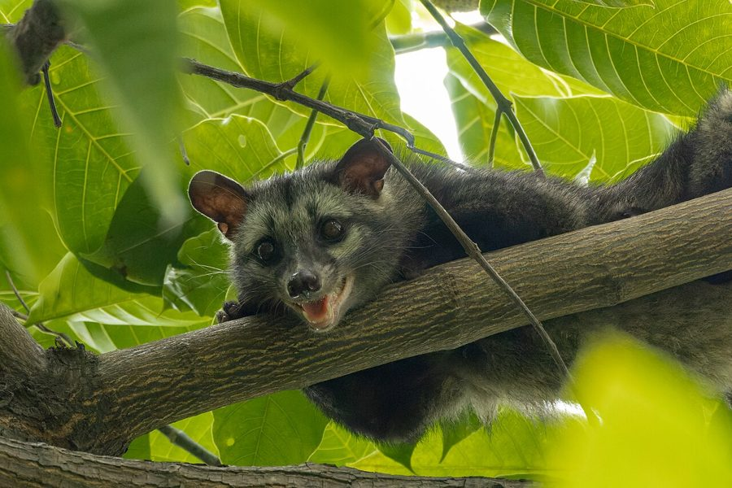

खटासCommon Palm Civet
Paradoxurus hermaphroditus · Viverridae · MAM-0010

- Scientific name
- Paradoxurus hermaphroditus (Pallas, 1777)
- Family
- Viverridae
- Hindi
- खटास
- Status here
- native
- IUCN
- LC
When to look कब देखें
Present all year.
खटास / Common Palm Civet
Paradoxurus hermaphroditus (Pallas, 1777) — Viverridae
खटास (कॉमन पाम सिवेट) — उत्तर प्रदेश के गांवों और कस्बों में पाया जाने वाला एक रात्रिचर (nocturnal) और वृक्षवासी (arboreal) देशी स्तनधारी जीव है। इसे स्थानीय लोग इसके शरीर से आने वाली एक विशिष्ट, तीखी मुश्क जैसी गंध (musk-like smell) के कारण 'खटास' नाम से जानते हैं, जो इसके गुदा ग्रंथियों (perineal glands) से स्रावित होती है। इसके भूरे-काले शरीर पर तीन स्पष्ट काली अनुदैर्ध्य धारियाँ होती हैं और चेहरे पर सफेद रंग के निशान होते हैं। यह पुराने पेड़ों की खोखलों, आम के बागों और घरों की छत के नीचे खाली पड़े हिस्सों (attics) में निवास करता है। यह सर्वाहारी जीव रात के समय फल, कीड़े और चूहे खाकर जीवित रहता है और पकड़े जाने पर बिल्ली की तरह तीखी चीख (scream) निकालता है।
Quick Identification त्वरित पहचान
| Feature | Description |
|---|---|
| Size & Shape | Cat-sized mammal with an elongated body, short legs, and a very long tail (often as long as the head-body length); weight ranges from 2–4.5 kg |
| Colour & Fur | Coarse greyish-black coat with three prominent black stripes on the back, and scattered black spots on the flanks; face has white markings around eyes and snout |
| Tail & Limbs | Long, bushy, blackish-grey tail with faint rings; feet have claws that are semi-retractile, adapted for climbing |
| Glands | Perineal glands present under the tail in both sexes, secreting a strong, musky scent when active or threatened |
| Eyes & Ears | Large, reflective yellowish eyes adapted for nocturnal vision; ears are small and rounded |
Field tip: Look for a cat-like animal with dark spots/stripes, a white-masked face, and a very long tail climbing in trees or running on roofs at night. The presence of a strong, sweetish-sour musk odor in an attic or orchard is a classic sign of this species.
Morphology आकारिकी
Biometrics (typical measurements in the Gangetic plain):
| Measurement | Range |
|---|---|
| Head-body length | 430–600 mm |
| Tail length | 400–550 mm |
| Weight | 2000–4500 g |
Body: Elongated, low-slung body with short limbs. The coat consists of long, coarse hair that is greyish-black or grizzled buff-grey. Three black longitudinal stripes run down the spine, bordered by horizontal rows of black spots on the flanks.
Head & Tail: The head is narrow with a pointed snout. The face bears a distinct white mask-like pattern consisting of a white band across the forehead, white patches under the eyes, and a white spot on each side of the muzzle. The tail is long, muscular, and non-prehensile, used primarily for balance.
Vocalisations
Civets are generally quiet but produce distinctive sounds during social interactions or under stress.
- Scream: When threatened, trapped, or during territorial disputes, it emits a harsh, high-pitched, cat-like scream or hiss.
- Churring: Produces a low-frequency, repetitive churring or purring sound when relaxed or communicating with juveniles.
- Growls & Snarls: Emits low growls and snarls when cornered.
Behaviour & Ecology व्यवहार और पारिस्थितिकी
Paradoxurus hermaphroditus is strictly nocturnal and highly arboreal. It spends the daylight hours sleeping in tree cavities, thick forks of branches, or roof spaces. It is a solitary animal, marking its territory using secretions from its perineal scent glands. It is an exceptionally agile climber, capable of running along thin branches and descending trunks headfirst.
Life Cycle / Phenology जीवन चक्र
- Breeding: Breeds twice a year, primarily during the pre-monsoon (March to May) and post-monsoon (October to December) periods.
- Reproduction: Gestation lasts approximately 60 days. The female gives birth to a litter of 2–4 pups in a hollow tree or attic.
- Development: Pups are born blind and helpless. They open their eyes after about 10–12 days and are weaned by 2 months.
- Lifespan: Lives 10–15 years in the wild, and can survive up to 20 years in captivity.
Host Plants or Prey आहार
Primary food items:
- Fruits: Consumes sweet fleshy fruits, including mangoes (Mangifera indica, [FLR-0011]), wild figs ([FLR-0006 Ficus religiosa], [FLR-0010 Ficus benghalensis]), jamun ([FLR-0036 Jamun]), and guava. It also drinks the sap of toddy palms.
- Animals: Feeds on small rodents (mice, rats), small birds, lizards, insects, and snails.
Predators / Natural Enemies शत्रु
- Mammals: Feral dogs occasionally hunt civets when they descend to the ground.
- Reptiles: Large pythons.
- Humans: Often trapped or poisoned due to their noise in attics or their threat to domestic poultry.
Agricultural / Human Relevance कृषि प्रासंगिकता
Seed Dispersal. As a major frugivore, the Common Palm Civet plays a critical ecological role in dispersing seeds of many tree species (including mangoes, banyans, and neem) across the landscape. However, it can cause nuisance in rural Basti by nesting in tiled roof spaces (khaprail), generating scraping sounds at night, and leaving foul-smelling droppings. It also occasionally raids village chicken coops.
Expected Locally स्थानीय रूप से अपेक्षित
Not a field record. Written from published accounts for eastern Uttar Pradesh. No confirmed local sighting yet — if you have seen it, that is what the atlas needs.
अभी तक स्थानीय पुष्टि नहीं। यह विवरण प्रकाशित स्रोतों से है, किसी अवलोकन से नहीं।
Highly common in the mature mango orchards (aam ki bagiya) and villages of Basti district. Often detected in old houses with tiled roofs. Known by villagers as Khattas or Khatas due to the characteristic sour-sweet musk smell left behind in roofs.
Distribution वितरण
Global range: South and Southeast Asia, extending from India, Nepal, and Sri Lanka to China and across Indonesia.
In India: Found statewide in almost all forest and agricultural zones.
In Uttar Pradesh: Common in all districts, particularly rural and semi-urban areas with old trees and orchards.
In Basti district / eastern UP: Abundant in village orchards, old temples, and houses.
Research Questions शोध प्रश्न
Anyone can investigate these | कोई भी इन प्रश्नों की जाँच कर सकता है
- What is the seasonal diet variation of Common Palm Civets in Basti's mango orchards? — Collect and analyze seeds from civet faeces in different months.
- How do civets access domestic roofs, and can simple structural modifications prevent entry? — Map entry points and test simple exclusion barriers.
- Can you identify the sweet-sour musk smell of a civet in a local orchard or roof space? / क्या आप किसी स्थानीय बगीचे या छत के खाली हिस्से में खटास (सिवेट) की मीठी-खट्टी मुश्क जैसी गंध को पहचान सकते हैं? — Explore old attics or mango orchards at dusk.
- Does the germination rate of mango seeds increase after passing through a civet's digestive tract? — Plant seeds collected from civet droppings alongside control seeds and compare germination times.
- What is the frequency of territorial calls of civets during the breeding seasons in Basti? / बस्ती में प्रजनन ऋतुओं के दौरान खटास के क्षेत्रीय आवाहनों (territorial calls) की आवृत्ति क्या है? — Set up a simple audio recorder near active roosts.
Similar Species मिलती-जुलती प्रजातियाँ
| Species | How to tell apart | हिंदी |
|---|---|---|
| Small Indian Civet (Viverricula indica) | Terrestrial (rarely climbs trees); body has more prominent horizontal rows of spots/stripes; tail has 6–9 distinct dark rings; lacks white markings on face | कस्तूरी / छोटा भारतीय सिवेट — जमीन पर रहना, पूंछ पर छल्ले |
| [MAM-0003 Jungle Cat] | Uniform sandy-brown coat without dark body stripes/spots; shorter tail with black tip; ears have tiny hair tufts | जंगली बिल्ली — एक समान भूरा रंग, छोटी पूंछ |
| [MAM-0005 Golden Jackal] | Much larger; dog-like posture; short, dark tail; lacks tree-climbing ability | सियार — बड़ा कुत्ता-जैसी आकृति, पेड़ पर नहीं चढ़ना |
Field rule: Cat-sized body with dark stripes and spots, white facial mask, long tail, arboreal habit, and strong musk scent identify the Common Palm Civet (Khattas).
Taxonomy & Classification वर्गीकरण
Original description. Peter Simon Pallas described the species as Viverra hermaphrodita in 1777 in Johann Christian Daniel von Schreber's work Die Säugthiere in Abbildungen nach der Natur, mit Beschreibungen (Volume 3, Heft 25, page 426). Type locality: India. The genus name Paradoxurus is derived from Greek, meaning "paradoxical tail," as Gray noted the tail can curl backward, and hermaphroditus refers to the perineal scent glands which resemble testicles in both sexes.
Subspecies. The subspecies occurring in Uttar Pradesh is Paradoxurus hermaphroditus pallasii (Gray, 1832).
Family and order placement. Placed in the order Carnivora, family Viverridae.
Phylogenetic notes. Paradoxurus hermaphroditus belongs to the subfamily Paradoxurinae and is closely related to the masked palm civet (Paguma larvata).
IUCN status rationale. Listed as Least Concern (LC). Widespread, highly abundant, and extremely adaptable to urbanized and agricultural environments.
Photo Gallery फोटो गैलरी
References संदर्भ
- Pallas, P. S. (1777). in Schreber, J. C. D. Die Säugthiere in Abbildungen nach der Natur, mit Beschreibungen. Vol. 3, Heft 25, p. 426. [original description as Viverra hermaphrodita]
- Pocock, R.I. (1939). The Fauna of British India, including Ceylon and Burma. Mammalia. Vol. 1. Taylor and Francis, London, pp. 387–415.
- Prater, S.H. (1971). The Book of Indian Animals. Bombay Natural History Society, Bombay, pp. 119–121.
- Menon, V. (2014). Indian Mammals: A Field Guide. Hachette India, Gurgaon, pp. 250–252.
- Patou, M.L. et al. (2009). Molecular systematics of the Palm Civets (Viverridae, Paradoxurinae). Systematics and Biodiversity, 7(4), 383–399.
- Duckworth, J.W. et al. (2016). Paradoxurus hermaphroditus. IUCN Red List of Threatened Species. Ver. 2016.
- GBIF Occurrence Data — Paradoxurus hermaphroditus, Uttar Pradesh (2010–2025).
Source file: species/fauna/mammals/common_palm_civet.md